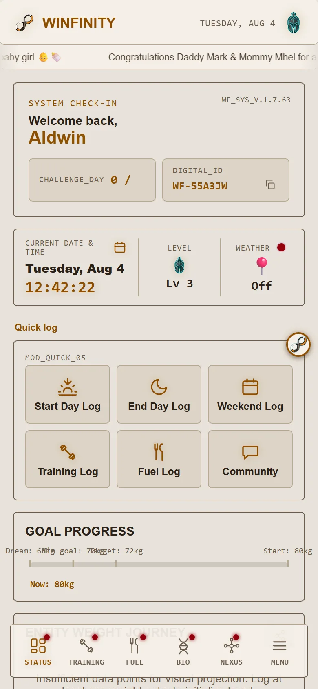

1

Dashboard — datetime card
Daily check-in
Your rank, always in view
A compact Level widget now lives right in the middle of the datetime card, between Current Date & Time and Weather — your rank icon and current level, without a dedicated screen of its own.
It's not just decoration: tapping it is one of three ways into the full character sheet.